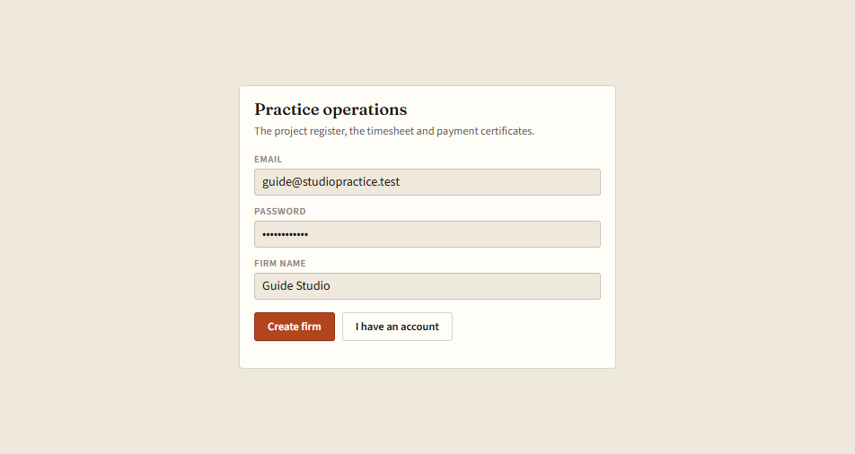
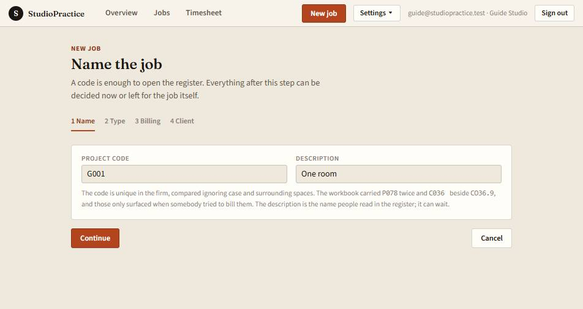
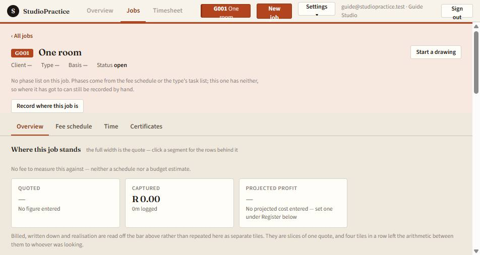

1. Create the firm
On the sign-in screen, choose Create a firm. Enter an email, a password of at least 10 characters, and a firm name. That creates the firm and signs you in. You are the owner. The practice page is empty until the first job exists.

2. Name a job
Press New job. The first step asks for a project code. A description is optional. On the later steps, Not classified yet and Not decided yet are finished answers, and the client can be blank. Press Create job.

3. Start a drawing
The job opens on its overview. In the header, press Start a drawing. The plan opens empty. The job code sits beside the name, Saved is next to it, and Back to overview returns you here. Switch the Toolbar to Full for the drawing steps.
